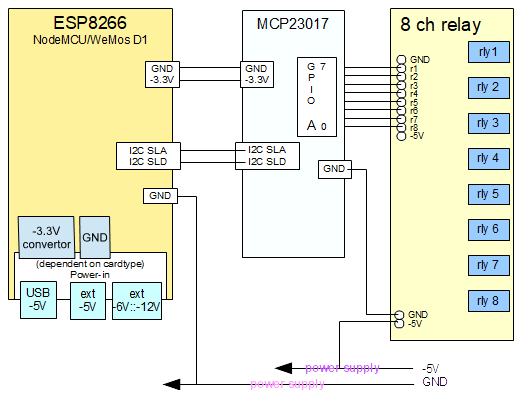

The three circuits are:
This board will be uploaded with the esp8266 8ch relay control .ino and classes, and the browser files. The esp8266_8ch_relay_control folder contains a sketch project for Arduino IDE (user needs to setup IDE to support ESP8266 development [search the web]).
This is a 3.3V operating board. Any voltage greater than 3.3V on a GPIO will damage the circuit/board.
This circuit provides an interface between the ESP8266 and relay circuit. The design requires this as the ESP8266 does not have:
This circuit supports 1.8V to 5.5V operating circuit (see the data sheet for better information).
This is the relay board and holds 8 relays (8 channel) and will connect to the MCP23017 GPIO pins directly. However, the operation of the relays requires 5V and 15mA-25mA.
The ESP8266 GPIO pins typically only provide 10mA; thus, further need for the MCP23017.
Following is a diagrammatic representation of the inter-connection between the boards.
Notes:
Otherwise an alternative -3.3V supply is required to the MCP23017 and ESP8266.
This is on the power-edge and all 8 relays activated may not actually work.
But must be powered by the ESP8266 boards -3.3V power source. The ESP8266 will be damaged otherwise due to the I2C connections running outside -3.3V.
The Group A GPIO pins are used to connect to the relay-board
| MCP2301 GPIO A pin # | 0 | 1 | 2 | 3 | 4 | 5 | 6 | 7 |
| 8 ch relay pin | r8 | r7 | r6 | r5 | r4 | r3 | r2 | r1 |